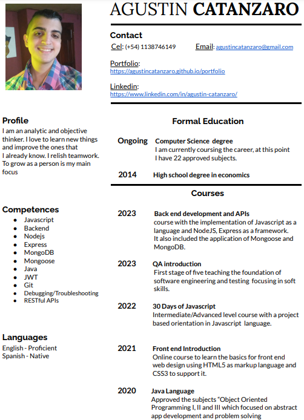

About Me
I am Agustin Catanzaro. I am from Argentina. I am an
University student, to learn and grow as a person is my main
focus. I allways try to have a side project to work on in my
free time.
At this time my knowledge its more wide than deep i know
multiple languages in a intermediate level. In order in what i
consider myself more proficient:
Javascript >
Nodejs/express > Mongoose > Java > Python > HTML > CSS.
I pretend to learn more about the languages that i
already know, and to learn new things, like REACT, NodeJS,
.NET, MySQL and MongoDB as a starter point, i dont expect to
stop learning in any time soon.
What i consider to be my most notable traits are my analytic
and objective way of thinking. Since i like to learn new thing
all the time i love to work in uncertainty and face new
challenges. I adapt to change thanks to my flexibility.
I relish team work, i have the capacity to comunicate my ideas
in an effective way. I appreciate the critiscism/feed-back
that a team partner can bring since it helps to improve. My
emphaty make me allways open to lend a hand to a team partner
who need it even if it doesnt apply to my work scope.
As a bad trait i would say that when i start with a project i
full commit to it, and my self critic sometimes make to start
it over again if i feel like i could make it better.
In a more personal fashion i like to learn new thing even if
are not related to IT. I play Guitar, Bass and Piano. Even if
im not actually good at any of those instruments, i really
enjoy the process of picking up a new one and learning how to
play it in a basic way. I play chess and multiple videogames.
I like to understand games in a more depth/"meta" way.
Projects
Backend Projects
Exercise Tracker
You can create an user, it will give you back an id, with that
id you can create an Exercise giving it a description duration
and optionally a date.
The idea of this code is the use of mongoose to create users
and then asociate exercise to them so we every user can access
its own excercise collection.
See Page
Code
Url Shortener
You can create POST a url with the "https:www.example.com"
format it gets added to a db and a number referencing it will
be created. then you can access that POSTed link using the
generated reference in this link:
https://url-shortener.agustincatanzar.repl.co/api/shorturl/REFERENCE_NUMBER_HERE
The idea of this code is to practice MongoDB and Mongoose
since every interaction depends on it.
See Page
Code
Jobs API
You can create a user which gets Authenticated with JWT. Then,
wevery user can create its own jobs application to keep a
track of created jobs offer and set them as
ongoing/accepted/rejected.
The idea of this code is to utilize a secure authentication
method and use it to access to the db with register users via
hashed passwords and manipulate jobs collection associated to
every individual user.
Disclaimer
The project is not hosted so is not possible to use the swagger to test it. but im showing the structure there.
See Page
Code
Mini Web Project

This project calculates the total world population and amount
of languages, and compare every country to it to determinate
which one have a higher amount of population/spoken languages
in a percentage way.
The idea of this code is the use of JS DOM and Promises. Since
it creates most element using js and to get the countries data
it connects to an API which contains all the information.
See Page
Code
Abstract Coding
Queen Conflict
Java app, it receive an input with a chess board NxN, and Y
amount of queens in the board. it determine every queen pair
that share row/column and/or diagonal since that is considered
a conflict.
Code
Change road direction
Python app, Using networkx(library) to create multiples nodes
connected between them we analize the path lenght and
determine which direction from node to node we should change
to get an optimal way to travel from point A to B
Code
To see more of my codes/projects you can visit my GitHub:
GitHub
CV
Download

Contact